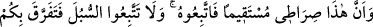
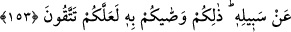

bunları” bu ayette açıklanan dört hususu “size tavsiye etti” tekidle bunları size emretti.
153. Şüphesiz bu, benim dosdoğru yolumdur. Buna uyun. (Başka) yollara uymayın.
Zîrâ o yollar sizi Allah’ın yolundan ayırır. İşte sakınmanız için Allah size bunları
emretti.
“İşte benim doğru yolum budur.” İşte bu sûrede anlatılan, tevhid ve peygamberliğin
isbâtı ile şeriatı beyan etmek benim doğru yolum ve şeriatımdır.
Âyette şeriat, yol diye isimlendirilmiştir. Çünkü o, insanı cennete götürür. Yol,
Allah’ın yolu olduğu halde “sırât” “yol” lafzının sonuna gelen iyelik zamiri ile
Efendimiz (s.a.)’e izafe edilmesi, o yolda olup ona intisab etmesi açısındandır. Yoksa
“Allah’ın yolu” (eş-Şûrâ, 42/53) ifadesinde olduğu gibi yolu vaz’ eden anlamında
değildir
10. “Ona uyun, başka yollara” Allah’ın yolundan başka, yahudilik, hristiyanlık ve
diğer dinler gibi muhtelif yollara “uymayın ki sizi O’nun yolundan” Allah’ın razı
olduğu ve tâbi olmanızı tavsiye ettiği dininden “ayırmasın.” O yol İslâm’dır. Burada
Rasûlullah (a.s.)’ın davet ettiği yolun, Allah’ın yolu ile aynı olduğuna dikkat
çekilmektedir.
Bu husus da on hükümden onuncusudur.
Peygamberin aksine yol tutan kimse
Asla menzile ulaşamaz
Sa’dî! Saâdet yolu sadece Mustafâ’nın
Peşinden gitmekle bulunur.
Küfür ve dalalet yoluna uymaktan “sakınmanız için” Allah “size bunları tavsiye
etti.”
Rasûlullah (s.a.), bu âyeti okuyunca dosdoğru bir çizgi çekti ve “İşte bu Allah’ın
yoludur.” buyurdu. Sonra o doğru çizginin sağından ve solundan muhtelif çizgiler çekti
ve “Bunlar da şeytanın insanları çağırdığı yollardır.”[182] buyurdu.
Bil ki, burada Allah Rasûlü’nün tarif ettiği şeriat ile kastolunan, sırât-ı müstakîmdir.
O, kıldan ince, kılıçtan keskindir. Bu sebeple biz, kıldığımız namazların her rekatında
“Bizi doğru yola yani sırât-ı müstakîme ilet” (el-Fatiha, 1/5) diye duâ ediyoruz.
Dünyada bu yoldan ayrılanın ahirette sırat köprüsünde ayağı kayar. Nitekim Rasûlullah
(s.a.): “Sırât” da ayağı kayanlar pek çoktur. Ayağı kayanların çoğu da
kadınlardır.”[183] buyurmuştur. Günümüzde ise şehvetlere tâbi olma ve çirkin adetlere
uyma konusunda erkeklerin çoğu, kadın hükmündedir.